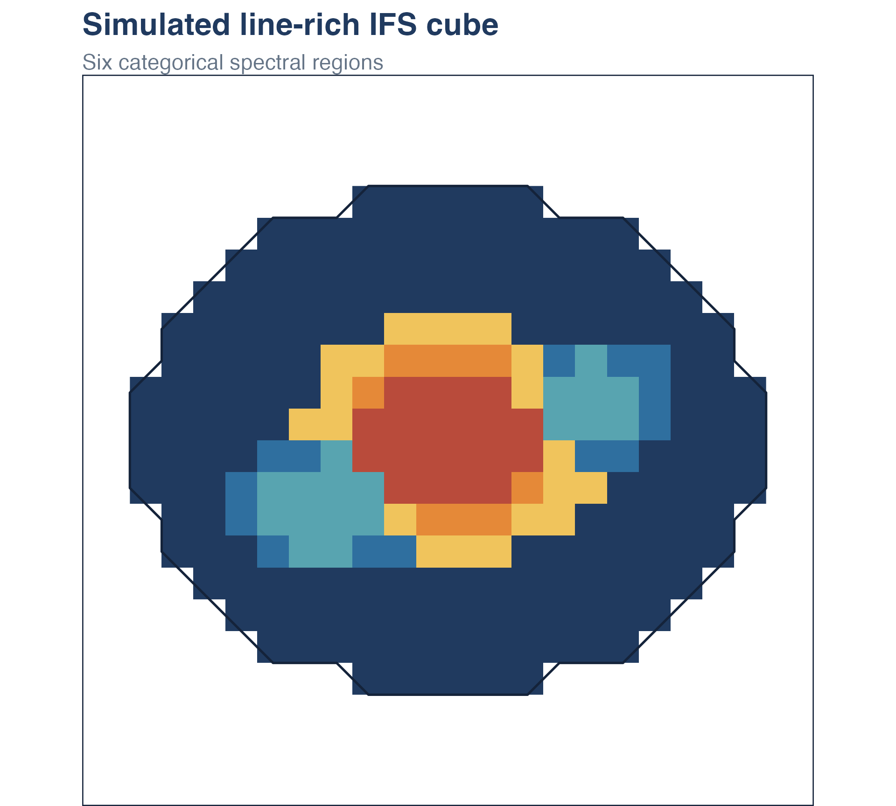
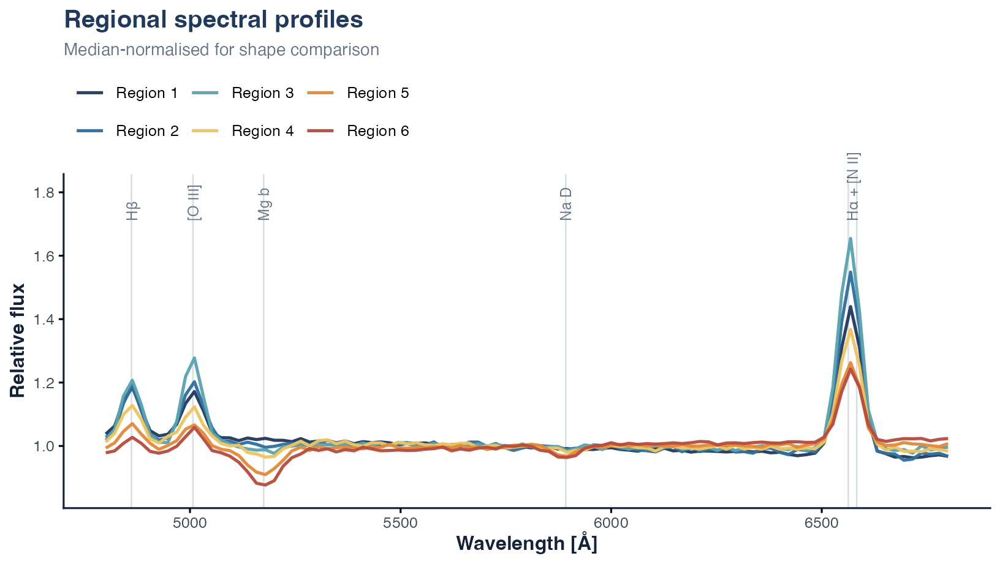

Capivara assigns eligible spaxels in an integral-field spectroscopy (IFS) cube to categorical regions with coherent spectra. Support construction, region assignment, and regional spectral products are distinct steps.
Install
install.packages("remotes")
remotes::install_github("RafaelSdeSouza/capivara", upgrade = "never")
library(capivara)The minimal example below uses the exact Ward backend and does not
require torch, Python, a GPU, survey downloads, or a local
data file.
Simulate a cube
This cube is generated only to exercise the package API. Its toy spatial model mixes a bulge, disc, compact nucleus, and two star-forming knots. The four input profiles include simplified Hβ, [O III], Mg b, Na D, Hα, and [N II] features. It is not an observation and must not be interpreted as scientific evidence. The displayed seed makes the example deterministic.
set.seed(241021962)
n_row <- 24L
n_col <- 24L
n_wave <- 96L
wavelength <- seq(4800, 6800, length.out = n_wave)
gaussian <- function(centre, width) {
exp(-0.5 * ((wavelength - centre) / width)^2)
}
row_id <- row(matrix(0, n_row, n_col))
col_id <- col(matrix(0, n_row, n_col))
x <- (col_id - 12.5) / 10
y <- (row_id - 12.5) / 8
radius <- sqrt(x^2 + y^2)
support <- radius <= 1
profiles <- rbind(
bulge = 1.12 + 0.00005 * (wavelength - 5800) -
0.18 * gaussian(5175, 38) - 0.07 * gaussian(5892, 28) +
0.05 * gaussian(6563, 24),
disc = 0.86 - 0.00003 * (wavelength - 5800) +
0.13 * gaussian(4861, 23) + 0.12 * gaussian(5007, 24) +
0.34 * gaussian(6563, 26) + 0.10 * gaussian(6583, 18),
knot = 0.72 + 0.28 * gaussian(4861, 21) +
0.46 * gaussian(5007, 22) + 0.85 * gaussian(6563, 23) +
0.18 * gaussian(6583, 16),
nucleus = 0.98 + 0.15 * gaussian(4861, 22) +
0.42 * gaussian(5007, 23) + 0.48 * gaussian(6563, 24) +
0.42 * gaussian(6583, 17)
)
w_bulge <- exp(-0.5 * (radius / 0.25)^2)
w_nucleus <- exp(-0.5 * (radius / 0.10)^2)
w_knots <-
exp(-((x - 0.48)^2 + (y + 0.16)^2) / (2 * 0.12^2)) +
exp(-((x + 0.40)^2 + (y - 0.28)^2) / (2 * 0.14^2))
w_disc <- 1 - w_bulge
w_disc[w_disc < 0.12] <- 0.12
cube <- array(NA_real_, dim = c(n_row, n_col, n_wave))
for (i in seq_len(n_row)) {
for (j in seq_len(n_col)) {
if (support[i, j]) {
weights <- c(w_bulge[i, j], w_disc[i, j],
w_knots[i, j], w_nucleus[i, j])
weights <- weights / sum(weights)
brightness <- 0.45 + 0.9 * exp(-1.7 * radius[i, j]) +
0.35 * w_knots[i, j]
profile <- drop(weights %*% profiles)
cube[i, j, ] <- brightness * profile + rnorm(n_wave, 0, 0.008)
}
}
}The elliptical logical matrix is the spatial support:
TRUE identifies eligible spaxels. Setting the cube to
NA outside that support ensures those positions remain
unassigned. A support mask does not itself assign region labels.
Segment the cube
seg <- segment(
input = list(imDat = cube),
Ncomp = 6,
use_starlet_mask = FALSE
)
table(seg$cluster_map, useNA = "ifany")
#>
#> 1 2 3 4 5 6 <NA>
#> 167 14 18 20 9 20 328Positive integers in seg$cluster_map are categorical
region identifiers. Their numerical ordering has no physical meaning.
NA denotes a spaxel that was outside the support or
otherwise unassigned.
region_palette <- c(
"#203a5f", "#2f6f9f", "#58a4b0",
"#f0c45c", "#e58938", "#b94b3b"
)
map_data <- data.frame(
x = rep(seq_len(n_col), each = n_row),
y = rep(seq_len(n_row), times = n_col),
region = factor(as.vector(seg$cluster_map))
)
support_data <- transform(map_data, in_support = as.numeric(support))
ggplot2::ggplot(
subset(map_data, !is.na(region)),
ggplot2::aes(x, y, fill = region)
) +
ggplot2::geom_blank(
data = map_data,
ggplot2::aes(x = x, y = y),
inherit.aes = FALSE
) +
ggplot2::geom_raster() +
ggplot2::geom_contour(
data = support_data,
ggplot2::aes(x = x, y = y, z = in_support),
breaks = 0.5,
colour = "#14233a",
linewidth = 0.55,
inherit.aes = FALSE
) +
ggplot2::scale_fill_manual(values = region_palette, guide = "none") +
ggplot2::scale_x_continuous(expand = c(0, 0)) +
ggplot2::scale_y_reverse(expand = c(0, 0)) +
ggplot2::coord_equal() +
ggplot2::labs(
title = "Simulated line-rich IFS cube",
subtitle = "Six categorical spectral regions"
) +
ggplot2::theme_void(base_size = 12) +
ggplot2::theme(
plot.title = ggplot2::element_text(
colour = "#203a5f", face = "bold", size = 15
),
plot.subtitle = ggplot2::element_text(colour = "#667587", size = 10.5),
panel.border = ggplot2::element_rect(
colour = "#14233a", fill = NA, linewidth = 0.55
)
)
Summarise regions
spectra <- summarize_cluster_spectra(seg)
regional_products <- data.frame(
region = spectra$cluster_ids,
n_spaxels = unname(spectra$n_spaxels),
summed_flux = round(rowSums(spectra$sum_spectra), 1)
)
knitr::kable(regional_products)| region | n_spaxels | summed_flux |
|---|---|---|
| 1 | 167 | 9835.3 |
| 2 | 14 | 1022.2 |
| 3 | 18 | 1592.4 |
| 4 | 20 | 1620.3 |
| 5 | 9 | 819.5 |
| 6 | 20 | 2225.6 |
The regional median spectra expose the line-rich profiles that drive this toy segmentation. They are normalised here only for visual comparison.
median_scaled <- sweep(
spectra$median_spectra,
1,
apply(spectra$median_spectra, 1, median),
"/"
)
spectral_data <- data.frame(wavelength, t(median_scaled), check.names = FALSE)
names(spectral_data)[-1] <- paste("Region", spectra$cluster_ids)
spectral_data <- tidyr::pivot_longer(
spectral_data,
-wavelength,
names_to = "region",
values_to = "relative_flux"
)
line_labels <- data.frame(
wavelength = c(4861, 5007, 5175, 5892, 6573),
label = c("Hβ", "[O III]", "Mg b", "Na D", "Hα + [N II]")
)
line_labels$y <- max(spectral_data$relative_flux) + 0.055
ggplot2::ggplot(
spectral_data,
ggplot2::aes(wavelength, relative_flux, colour = region)
) +
ggplot2::geom_vline(
xintercept = c(4861, 5007, 5175, 5892, 6563, 6583),
colour = "#d8dee5",
linewidth = 0.45
) +
ggplot2::geom_line(linewidth = 0.9, alpha = 0.96) +
ggplot2::geom_text(
data = line_labels,
ggplot2::aes(wavelength, y, label = label),
inherit.aes = FALSE,
angle = 90,
hjust = 0,
colour = "#667587",
size = 3.25
) +
ggplot2::scale_colour_manual(values = region_palette) +
ggplot2::coord_cartesian(
ylim = c(min(spectral_data$relative_flux) - 0.025, line_labels$y[1] + 0.10),
clip = "off"
) +
ggplot2::labs(
title = "Regional spectral profiles",
subtitle = "Median-normalised for shape comparison",
x = "Wavelength [Å]",
y = "Relative flux",
colour = NULL
) +
ggplot2::theme_classic(base_size = 12) +
ggplot2::theme(
plot.title = ggplot2::element_text(
colour = "#203a5f", face = "bold", size = 15
),
plot.subtitle = ggplot2::element_text(colour = "#667587", size = 10.5),
axis.title = ggplot2::element_text(colour = "#14233a", face = "bold"),
axis.text = ggplot2::element_text(colour = "#3f4d5b"),
axis.line = ggplot2::element_line(colour = "#14233a", linewidth = 0.55),
legend.position = "top",
legend.justification = "left",
legend.key.width = grid::unit(1.4, "lines")
)
For region (k) and wavelength channel , the summed spectrum is
Use sum_spectra when total regional flux is the required
science product. median_spectra and
mean_spectra are diagnostic summaries unless a specific
downstream method requires them.
Use real data

For an observed cube, read the FITS object with
FITSio::readFITS() and pass it to segment() or
segment_large(). The backend guide explains
that choice; the support guide covers
data-driven support masks; and the FITS
export guide preserves label and WCS conventions.